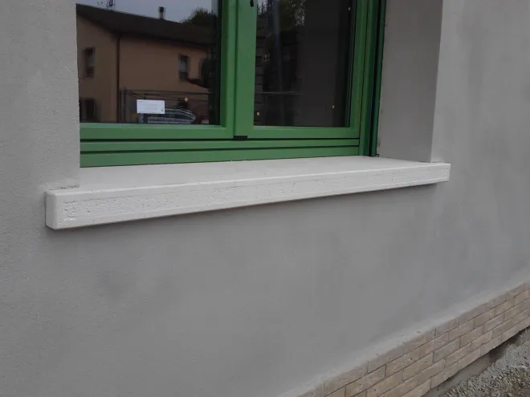

Produzione artigianale dal 1900
I nostri prodotti
Manufatti in cemento e graniglia realizzati con attenzione alle proporzioni, alle finiture e alle esigenze di ogni progetto.

Davanzali
Graniglie, forme personalizzate e soluzioni su misura per ogni serramento.

Scale
Gradini su misura, recuperi e finiture per scale nuove o da rinnovare.

Alloggi contatori
Nicchie su misura con sportelli ermetici e serrature con chiave unificata.

Colonne e balaustre
Soluzioni standard e forme personalizzate realizzate su disegno e misura.

Lavori speciali
Ricostruzioni e creazioni uniche eseguite su disegno e per esigenze specifiche.
Hai un progetto da valutare?
Forma, dimensioni e finiture possono essere studiate insieme.